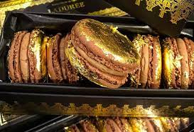
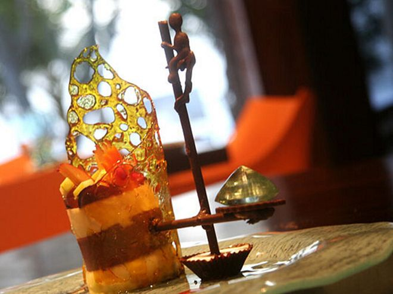
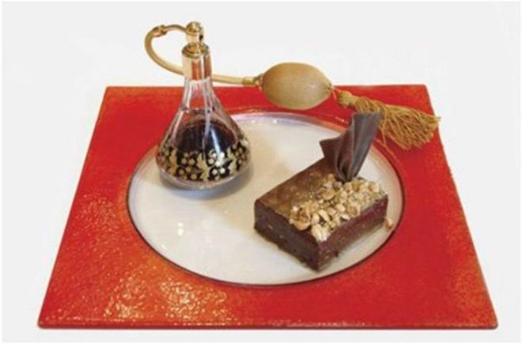
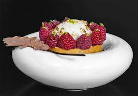
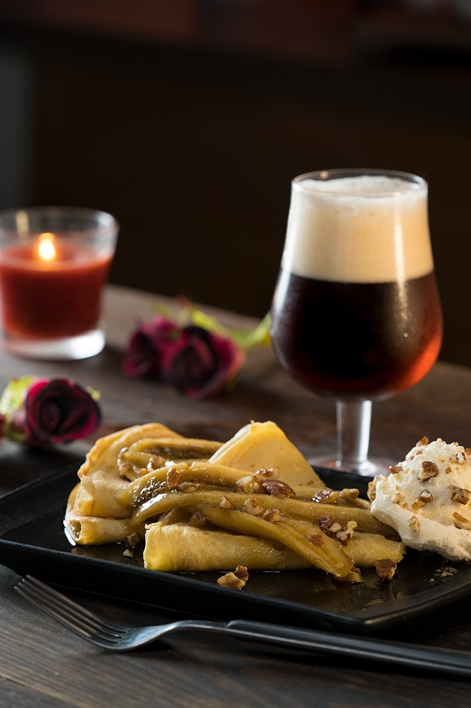

|
Pastel de cuatro chocolates
$310 |
Está hecho de 4 chocolates belgas de la mejor calidad, melocotón, naranja, whisky, gelatina de champán, caviar, y hojas comestibles de oro a modo de decoración. Un plus que tiene esta pieza es un diamante de 2 quilates. |
|  |
Macarons de oro de Alta Costura
$280 |
Están elaborados de pera al Sauternes y cubiertos con hojas de oro comestible de 22 kilates. Su decoración está compuesta a base de camafeos y aplicaciones de pasta tierna de nueces con pera y vino Sauternes. Su color de oro envejecido los hace irresistibles también a la vista. |
|  |
Fortress Stilt Fisherman Indulgence
$220 |
Está elaborado con cassata italiana, con una base de champaña, crema irlandesa y oro comestible. Se sirve con mango y granada. Acompañado de una figura de chocolate en forma de pescador, que representa la práctica pesquera de la región. |
 |
Dome’s Truffle Ice
$185 |
Está elaborado con helado de trufa Perigord en capas, cubierto de chocolate y con hojas de oro bañado con una copa de cognac Moyet Tres Vieille Grande Champagne N° 7. |
|  |
Brownie Extraordinaire with Sain Louis
$250 |
Brownie cubierto de avellanas con caramelo y se sirve junto a una botella de perfume de cristal Saint Louis que contiene un extraño vino “Quinta Noval 1996″ que se usa para refrescar la boca antes de comenzar el postre. |
 |
Espiral de chocolate con helado de sésamo
$140 |
El helado es de semillas de sésamo y se acompaña de su espiral de gelatina de chocolate, el brioche convertido en ‘tierra’ y un buen aceite de oliva virgen extra. |
|  |
Tartaleta de crema de lima con frambuesas
$105 |
Las tartaletas de lima y frambuesas se componen de una pasta azucarada, un bizcocho con avellanas y una sencilla crema de lima. |
|  |
Crepas con plátanos flameados
$95 |
Unas crêpes de plátano caramelizado y flameado con ron negro y jalea de té earl grey de Can Bech. |